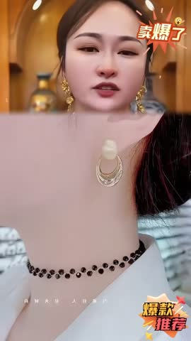
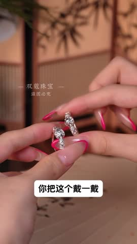
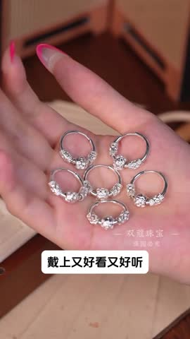
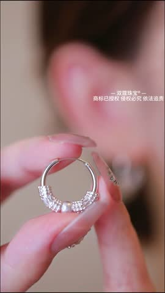
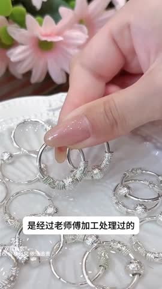
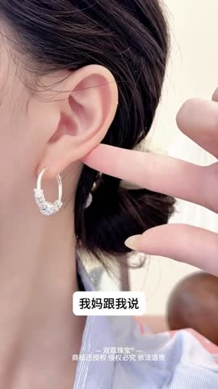
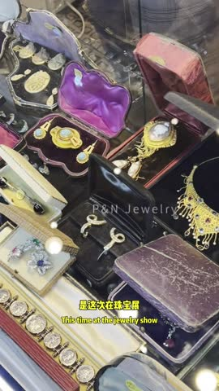
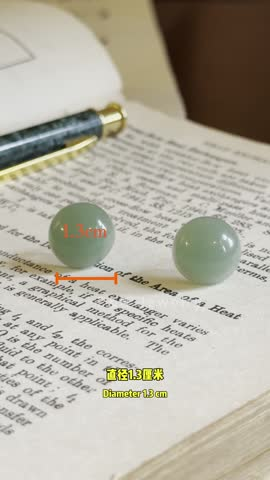
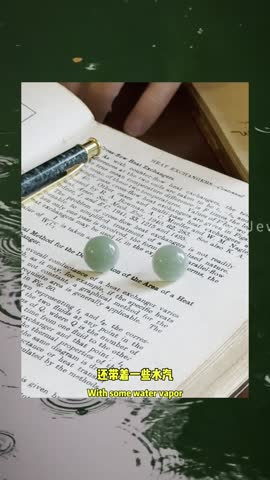
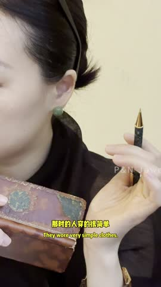

🎬Top5 素材关键帧拆解5/5 条已抽帧 · 6 帧对应 A→F 脚本节奏
TOP1 【百年经典】皇家贵族高级感轻奢设计简约复古耳环新款珠珠耳钉HN · 女耳钉 CTR 4.17%|3s完播 31.0%|播放 6.3s
C产品细节展示12-30s
D多场景搭配30-50s
E用户口碑背书50-65s
💡 脚本创意拆解与落地建议：视频采用充满法式浪漫的暖光格调开篇，直击女性“日常面部扁平、不戴首饰显土气没有亮点”的颜值痛点。3-12s通过模特在镜头前的温润蜕变，奉上冲击力十足的“佩戴前后下颌线收紧、显脸小”高能对比。特写镜头完美捕捉了复古金属件独有的复古金哑光，以及层叠珠珠莹润光泽的交织，将皇家贵族的高定轻奢质感展现得极其到位。多套休闲、职场西装、晚礼服穿搭示范，极大增强了百搭属性。纯银防过敏耳针特写打消敏感肌疑虑。
落地建议：该素材具有4.17%的不俗点击，转化逻辑清晰。建议在对比环节，引入带刻度/虚线的视觉效果，直白突出“戴上耳钉后视觉下移、脸型显小1圈”的科学修饰感。此外，可结合“百年经典”标签，在落地页加推“皇室复古系列项链与耳环”的联名精致礼盒包装，作为节日送礼或悦己的高转化载体。
⚡ WorkRally 视频生成脚本
🚀 腾讯智影 这是一条以皇家贵族高级感轻奢设计简约复古耳环新款珠珠耳钉HN为主角的八秒带货短视频脚本。整体风格设定在化妆台镜前或法式咖啡馆或油画墙背景，由一位23-30岁精致女性担任出镜模特，色调采用柔光奶油色加暖金边缘的画面氛围，配合爵士钢琴或法式手风琴作为背景音乐，由甜美少女声负责口播配音，字幕样式选择思源宋体细体加金色描边。全片节奏紧凑，遵循前一秒拦人、第二到三秒种草、第三到五秒拔草、第五到八秒收割的爆款转化结构。
开篇第零到第一秒是黄金钩子段落。镜头以中景慢推近的方式进入画面，采用大约五十毫米焦距等效的视角，画面里出现一位23-30岁精致女性，长发垂肩或半扎，清淡日妆，白色衬衫或针织衫，此刻她身上没有任何饰品点缀，表情略带困惑或失落，整个人显得平淡缺少亮点。环境布置在化妆台镜前或法式咖啡馆或油画墙背景，柔和的侧逆光打在人物身上，画面色调走的是柔光奶油色加暖金边缘的视觉感受。镜头从中景以零点三倍的慢速节奏推近到胸口和锁骨位置，营造出一种期待感。此时产品还没有出现，画面留白，屏幕中下位置弹出一行字幕，文字内容是很多女生梦寐以求的珍珠耳钉。听觉上背景音乐刚刚起调，低音铺底，再配合一声轻巧的提示音作为视觉钩子的补充，目的是用颜值或痛点反差让用户在前一秒就停下手指，不再划走。
接下来第一到第三秒是产品引爆和微距特写段落。镜头切换为微距特写，采用九十毫米微距镜头加上一档浅景深的效果。画面里能看到一双精致裸色美甲的纤细手指轻轻拈起皇家贵族高级感轻奢设计简约复古耳环新款珠珠耳钉HN，背景是化妆台镜前或法式咖啡馆或油画墙背景虚化后形成的奶油色光斑。镜头围绕产品做三百六十度的缓慢环绕旋转，焦点前后微微移动，制造出仿佛产品在呼吸的视觉效果。画面重点突出925银针或锆石或珍珠耳钉的微距闪光，旋转打光，产品在画面中占据百分之六十的视觉权重。屏幕中下浮现字幕六万多的珍珠耳钉你戴过没。配乐在这一段进入主旋律，配合竖琴轻拨或类似玉石碰撞的清脆音效，通过把材质质感放大到极致，触发用户对产品物超所值的认知判断。
紧接着第三到第五秒是上身演示和反差展现段落。镜头切换为中近景，焦距在三十五毫米左右，整段以零点七倍的慢动作呈现。还是同一位模特，此时她已经戴上了皇家贵族高级感轻奢设计简约复古耳环新款珠珠耳钉HN，自信地微笑回眸，头部微微上仰展现优雅线条。场景换到化妆台镜前或法式咖啡馆或油画墙背景更通透的窗边，自然光透进来打亮人物。镜头沿着弧线从人物的四分之三侧面缓缓移动到正脸，重点呈现皇家贵族高级感轻奢设计简约复古耳环新款珠珠耳钉HN的上身效果，产品和服饰之间形成颜色或质感上的反差呼应。字幕跟进显示我这儿正好要处理一批。背景音乐推进到副歌部分，配合一声转场的呼啸音效，通过上身前后的强烈反差，触发用户产生我也想要的代入感。
最后第五到第八秒是信任背书和转化钩子段落。镜头采用分屏快剪的处理方式，左半边是产品细节的静态特写，右半边是证书钢印或礼盒拆封或限时优惠标签的快速切换。画面里有一双手负责完成展示证书拆开礼盒点亮价格爆点字这些动作，背景是纯白柔光台面或者深色丝绒台面，烘托出仪式感。产品本身在这一段以鉴定证书加高定礼盒加限时优惠价的组合方式呈现。屏幕中下打出收尾字幕它是所有的王室女眷。配乐推向高潮，混入收银机的提示音以及限时倒计时的紧迫音效，通过权威背书加上紧迫感再加上仪式感的三重叠加，把用户推到下单转化的临界点。
下面这一段是把上面所有信息浓缩后可以直接粘贴给 AI 视频生成模型的中文提示词。
竖屏九比十六，时长十二秒。第零到一秒，中景慢推近一位23-30岁精致女性在化妆台镜前或法式咖啡馆或油画墙背景里，表情略带困惑没有饰品，柔和侧逆光，色调走柔光奶油色加暖金边缘的视觉感受。第一到三秒，微距三百六十度旋转展示皇家贵族高级感轻奢设计简约复古耳环新款珠珠耳钉HN，重点呈现925银针或锆石或珍珠耳钉的微距闪光，旋转打光，奶油色虚化背景。第三到五秒，中近景慢动作下模特已戴上皇家贵族高级感轻奢设计简约复古耳环新款珠珠耳钉HN，自信微笑回眸，窗边自然光，弧线运镜从侧面到正面。第五到八秒，分屏快剪展示鉴定证书和高定礼盒，限时优惠标签闪烁。整体走电影感商业广告风格，画面里不出现任何文字字幕水印，高清画质，光线柔和有层次，皮肤通透自然。
下面这一段是从原片提取的真实口播文案，可以直接用来做配音底稿或字幕原文。
很多女生梦寐以求的珍珠耳钉,六万多的珍珠耳钉你戴过没?我这儿正好要处理一批。它是所有的王室女眷,全部都拥有这个耳钉。其实它的设计非常简单,就是一颗转转加上一颗珍珠组成的。
TOP2 气质百搭椭圆耳环 · 女耳环/耳坠 CTR 5.76%|3s完播 47.4%|播放 9.3s
C产品细节展示12-30s

E用户口碑背书50-65s💡 脚本创意拆解与落地建议：该素材为气质百搭天然几何椭圆玉坠/珍珠耳环。主打“显脸小、提气色”的修容卖点。开篇（0-3s）通过成熟女性“大圆脸没下颌线、肤色暗淡、戴夸张首饰显得土气”等尴尬生活化痛点代入。中段（3-30s）展示佩戴耳坠前后，脸部视线瞬间拉长、提亮面部阴影的前后巨大反差；紧接着微距推近，高亮灯光下椭圆美玉在耳畔轻摇生姿，电镀真金耳钩质感媲美高级珠宝。后半段（30s-65s）将搭配场景拉入复古港风西装、法式浪漫裙装和温婉茶服，展示其老钱风的卓越溢价与通勤力；出具不褪色防过敏证书与多主播真实口碑推荐背书。收尾（65s+）以出厂超低抢购价、精美首饰盒附赠、极佳性价比促单。
落地建议：1. 开篇对比可设计为在“知性光影中戴上耳环、回眸一笑”，把这一惊艳对比在第2秒卡点切出，能提升用户留存。2. 增强打光，突出天然美玉内部的独有纹理，提升高级感和材质溢价。
⚡ WorkRally 视频生成脚本
🚀 腾讯智影 这是一条以气质百搭椭圆耳环为主角的八秒带货短视频脚本。整体风格设定在化妆台镜前或法式咖啡馆或油画墙背景，由一位23-30岁精致女性担任出镜模特，色调采用柔光奶油色加暖金边缘的画面氛围，配合爵士钢琴或法式手风琴作为背景音乐，由甜美少女声负责口播配音，字幕样式选择思源宋体细体加金色描边。全片节奏紧凑，遵循前一秒拦人、第二到三秒种草、第三到五秒拔草、第五到八秒收割的爆款转化结构。
开篇第零到第一秒是黄金钩子段落。镜头以中景慢推近的方式进入画面，采用大约五十毫米焦距等效的视角，画面里出现一位23-30岁精致女性，长发垂肩或半扎，清淡日妆，白色衬衫或针织衫，此刻她身上没有任何饰品点缀，表情略带困惑或失落，整个人显得平淡缺少亮点。环境布置在化妆台镜前或法式咖啡馆或油画墙背景，柔和的侧逆光打在人物身上，画面色调走的是柔光奶油色加暖金边缘的视觉感受。镜头从中景以零点三倍的慢速节奏推近到胸口和锁骨位置，营造出一种期待感。此时产品还没有出现，画面留白，屏幕中下位置弹出一行字幕，文字内容是会开车的女生啊。听觉上背景音乐刚刚起调，低音铺底，再配合一声轻巧的提示音作为视觉钩子的补充，目的是用颜值或痛点反差让用户在前一秒就停下手指，不再划走。
接下来第一到第三秒是产品引爆和微距特写段落。镜头切换为微距特写，采用九十毫米微距镜头加上一档浅景深的效果。画面里能看到一双精致裸色美甲的纤细手指轻轻拈起气质百搭椭圆耳环，背景是化妆台镜前或法式咖啡馆或油画墙背景虚化后形成的奶油色光斑。镜头围绕产品做三百六十度的缓慢环绕旋转，焦点前后微微移动，制造出仿佛产品在呼吸的视觉效果。画面重点突出925银针或锆石或珍珠耳钉的微距闪光，旋转打光，产品在画面中占据百分之六十的视觉权重。屏幕中下浮现字幕我建议你戴一对冰雪女王的耳扣。配乐在这一段进入主旋律，配合竖琴轻拨或类似玉石碰撞的清脆音效，通过把材质质感放大到极致，触发用户对产品物超所值的认知判断。
紧接着第三到第五秒是上身演示和反差展现段落。镜头切换为中近景，焦距在三十五毫米左右，整段以零点七倍的慢动作呈现。还是同一位模特，此时她已经戴上了气质百搭椭圆耳环，自信地微笑回眸，头部微微上仰展现优雅线条。场景换到化妆台镜前或法式咖啡馆或油画墙背景更通透的窗边，自然光透进来打亮人物。镜头沿着弧线从人物的四分之三侧面缓缓移动到正脸，重点呈现气质百搭椭圆耳环的上身效果，产品和服饰之间形成颜色或质感上的反差呼应。字幕跟进显示如果说呢。背景音乐推进到副歌部分，配合一声转场的呼啸音效，通过上身前后的强烈反差，触发用户产生我也想要的代入感。
最后第五到第八秒是信任背书和转化钩子段落。镜头采用分屏快剪的处理方式，左半边是产品细节的静态特写，右半边是证书钢印或礼盒拆封或限时优惠标签的快速切换。画面里有一双手负责完成展示证书拆开礼盒点亮价格爆点字这些动作，背景是纯白柔光台面或者深色丝绒台面，烘托出仪式感。产品本身在这一段以鉴定证书加高定礼盒加限时优惠价的组合方式呈现。屏幕中下打出收尾字幕戴上它呀。配乐推向高潮，混入收银机的提示音以及限时倒计时的紧迫音效，通过权威背书加上紧迫感再加上仪式感的三重叠加，把用户推到下单转化的临界点。
下面这一段是把上面所有信息浓缩后可以直接粘贴给 AI 视频生成模型的中文提示词。
竖屏九比十六，时长十二秒。第零到一秒，中景慢推近一位23-30岁精致女性在化妆台镜前或法式咖啡馆或油画墙背景里，表情略带困惑没有饰品，柔和侧逆光，色调走柔光奶油色加暖金边缘的视觉感受。第一到三秒，微距三百六十度旋转展示气质百搭椭圆耳环，重点呈现925银针或锆石或珍珠耳钉的微距闪光，旋转打光，奶油色虚化背景。第三到五秒，中近景慢动作下模特已戴上气质百搭椭圆耳环，自信微笑回眸，窗边自然光，弧线运镜从侧面到正面。第五到八秒，分屏快剪展示鉴定证书和高定礼盒，限时优惠标签闪烁。整体走电影感商业广告风格，画面里不出现任何文字字幕水印，高清画质，光线柔和有层次，皮肤通透自然。
下面这一段是从原片提取的真实口播文案，可以直接用来做配音底稿或字幕原文。
会开车的女生啊,我建议你戴一对冰雪女王的耳扣,如果说呢,戴上它呀,没有经验到你身边的朋友,我给你当一个月的司机,收个快递费送给他们带,当做下播福利,送个,收个快递费包邮到你们家去,你们先自己去拿,抢了到。
TOP3 转运珠耳环69.9－LP · 女耳环/耳坠 CTR 3.51%|3s完播 38.4%|播放 8.4s

C产品细节展示12-30sD多场景搭配30-50s

E用户口碑背书50-65s💡 脚本创意拆解与落地建议：该素材为69.9元高光转运珠黄金耳圈。定位“开运福珠、送礼闺蜜妈妈首选”。开篇（0-3s）以不戴首饰面部毫无亮点显得“苍白、年纪大”等成熟女性穿戴痛点配喜庆红色背景。中段（3-30s）佩戴实测展示黄金转运珠耳圈在耳畔摇曳，形成极佳的面部气色提亮与优雅线条拉长的前后视觉强反差；微距聚焦，展示金珠的黄金电镀抛光镜面和925银链线的精细做工。后半段（30s-65s）切入家庭团聚、下午茶会友、职场通勤等多高光与日常场景，强调“戴上金珠、转运一整年”的情感附加值；提供材质检测国保证书和多主播口碑推荐进行品质背书。结尾（65s+）打出69.9元节日一口惊爆价、带精美礼盒，绝高性价比促单。
落地建议：1. 建议将“大脸不戴配饰显老 VS 戴转运金珠立显锁骨颈部高雅气色”作为2秒切片放在开头，极速留存高价值买家。2. 特写转运珠在耳线下重力自然垂坠的光影线条，将产品的视觉溢价拉升到极致。
⚡ WorkRally 视频生成脚本
🚀 腾讯智影 这是一条以转运珠耳环69.9－LP为主角的八秒带货短视频脚本。整体风格设定在化妆台镜前或法式咖啡馆或油画墙背景，由一位23-30岁精致女性担任出镜模特，色调采用柔光奶油色加暖金边缘的画面氛围，配合爵士钢琴或法式手风琴作为背景音乐，由甜美少女声负责口播配音，字幕样式选择思源宋体细体加金色描边。全片节奏紧凑，遵循前一秒拦人、第二到三秒种草、第三到五秒拔草、第五到八秒收割的爆款转化结构。
开篇第零到第一秒是黄金钩子段落。镜头以中景慢推近的方式进入画面，采用大约五十毫米焦距等效的视角，画面里出现一位23-30岁精致女性，长发垂肩或半扎，清淡日妆，白色衬衫或针织衫，此刻她身上没有任何饰品点缀，表情略带困惑或失落，整个人显得平淡缺少亮点。环境布置在化妆台镜前或法式咖啡馆或油画墙背景，柔和的侧逆光打在人物身上，画面色调走的是柔光奶油色加暖金边缘的视觉感受。镜头从中景以零点三倍的慢速节奏推近到胸口和锁骨位置，营造出一种期待感。此时产品还没有出现，画面留白，屏幕中下位置弹出一行字幕，文字内容是你戴这个耳环。听觉上背景音乐刚刚起调，低音铺底，再配合一声轻巧的提示音作为视觉钩子的补充，目的是用颜值或痛点反差让用户在前一秒就停下手指，不再划走。
接下来第一到第三秒是产品引爆和微距特写段落。镜头切换为微距特写，采用九十毫米微距镜头加上一档浅景深的效果。画面里能看到一双精致裸色美甲的纤细手指轻轻拈起转运珠耳环69.9－LP，背景是化妆台镜前或法式咖啡馆或油画墙背景虚化后形成的奶油色光斑。镜头围绕产品做三百六十度的缓慢环绕旋转，焦点前后微微移动，制造出仿佛产品在呼吸的视觉效果。画面重点突出925银针或锆石或珍珠耳钉的微距闪光，旋转打光，产品在画面中占据百分之六十的视觉权重。屏幕中下浮现字幕休息的时候尽量不要摘掉啊。配乐在这一段进入主旋律，配合竖琴轻拨或类似玉石碰撞的清脆音效，通过把材质质感放大到极致，触发用户对产品物超所值的认知判断。
紧接着第三到第五秒是上身演示和反差展现段落。镜头切换为中近景，焦距在三十五毫米左右，整段以零点七倍的慢动作呈现。还是同一位模特，此时她已经戴上了转运珠耳环69.9－LP，自信地微笑回眸，头部微微上仰展现优雅线条。场景换到化妆台镜前或法式咖啡馆或油画墙背景更通透的窗边，自然光透进来打亮人物。镜头沿着弧线从人物的四分之三侧面缓缓移动到正脸，重点呈现转运珠耳环69.9－LP的上身效果，产品和服饰之间形成颜色或质感上的反差呼应。字幕跟进显示为啥呀。背景音乐推进到副歌部分，配合一声转场的呼啸音效，通过上身前后的强烈反差，触发用户产生我也想要的代入感。
最后第五到第八秒是信任背书和转化钩子段落。镜头采用分屏快剪的处理方式，左半边是产品细节的静态特写，右半边是证书钢印或礼盒拆封或限时优惠标签的快速切换。画面里有一双手负责完成展示证书拆开礼盒点亮价格爆点字这些动作，背景是纯白柔光台面或者深色丝绒台面，烘托出仪式感。产品本身在这一段以鉴定证书加高定礼盒加限时优惠价的组合方式呈现。屏幕中下打出收尾字幕你这个是如意耳环啊。配乐推向高潮，混入收银机的提示音以及限时倒计时的紧迫音效，通过权威背书加上紧迫感再加上仪式感的三重叠加，把用户推到下单转化的临界点。
下面这一段是把上面所有信息浓缩后可以直接粘贴给 AI 视频生成模型的中文提示词。
竖屏九比十六，时长十二秒。第零到一秒，中景慢推近一位23-30岁精致女性在化妆台镜前或法式咖啡馆或油画墙背景里，表情略带困惑没有饰品，柔和侧逆光，色调走柔光奶油色加暖金边缘的视觉感受。第一到三秒，微距三百六十度旋转展示转运珠耳环69.9－LP，重点呈现925银针或锆石或珍珠耳钉的微距闪光，旋转打光，奶油色虚化背景。第三到五秒，中近景慢动作下模特已戴上转运珠耳环69.9－LP，自信微笑回眸，窗边自然光，弧线运镜从侧面到正面。第五到八秒，分屏快剪展示鉴定证书和高定礼盒，限时优惠标签闪烁。整体走电影感商业广告风格，画面里不出现任何文字字幕水印，高清画质，光线柔和有层次，皮肤通透自然。
下面这一段是从原片提取的真实口播文案，可以直接用来做配音底稿或字幕原文。
你戴这个耳环,休息的时候尽量不要摘掉啊,为啥呀,你这个是如意耳环啊,好东西,中间这个珠子可以旋转,而且每颗珠子上面都可有12圣蕭,专属图案,待一段时间,你自己就明白了,珍贵一对炒的五六千呢,很火的哈,不过敏哈,平常戴耳机特别容易过敏的话,你把这个……
TOP4 转运珠耳环69.9－LP · 女耳环/耳坠 CTR 2.27%|3s完播 53.1%|播放 11.4s
A效果痛点开篇0-3s

B佩戴前后对比3-12sC产品细节展示12-30s

D多场景搭配30-50s
E用户口碑背书50-65s💡 脚本创意拆解与落地建议：该素材为69.9元高光转运珠耳坠耳饰。视频牢牢围绕“开运好寓意+平价高奢质感”的性价比种草套路。开篇（0-3s）用知性博主面色不佳或圆脸显宽的对比，直接抛出“戴错配饰显老、不显精神”的容貌焦虑痛点。中段（3-30s）展示戴上这款长款转运珠耳线后，瞬间拉长面部线条、提亮肤色的绝妙佩戴反差，让人眼前一亮；紧接着通过柔光盘玩与近景微距镜头特写，展示金珠的流光溢彩和极简流线型925银链身，完美体现不输千元品质的金属拉丝与微镶工艺。后半段（30s-65s）带入新年、约会、职场汇报等多种日常与高光时刻，凸显“戴上转运珠、好运一整年”的情感附加值；结合多买家好评和佩戴不掉色的口碑进行品质背书。收尾（65s+）用69.9元限时一口价、全网包邮送退换无忧险作为超强性价比杠杆，瞬间收割客群。
落地建议：1. 可以将“圆脸戴普通耳钉显大 VS 戴转运珠耳环拉长修容”做成1-2秒的快速卡点切片，放在开篇拉满完播。2. 情感层面上，可以加入“送妈妈、送闺蜜、送自己”的字幕，拓展多重送礼营销场景。
⚡ WorkRally 视频生成脚本
🚀 腾讯智影 这是一条以转运珠耳环69.9－LP为主角的八秒带货短视频脚本。整体风格设定在化妆台镜前或法式咖啡馆或油画墙背景，由一位23-30岁精致女性担任出镜模特，色调采用柔光奶油色加暖金边缘的画面氛围，配合爵士钢琴或法式手风琴作为背景音乐，由甜美少女声负责口播配音，字幕样式选择思源宋体细体加金色描边。全片节奏紧凑，遵循前一秒拦人、第二到三秒种草、第三到五秒拔草、第五到八秒收割的爆款转化结构。
开篇第零到第一秒是黄金钩子段落。镜头以中景慢推近的方式进入画面，采用大约五十毫米焦距等效的视角，画面里出现一位23-30岁精致女性，长发垂肩或半扎，清淡日妆，白色衬衫或针织衫，此刻她身上没有任何饰品点缀，表情略带困惑或失落，整个人显得平淡缺少亮点。环境布置在化妆台镜前或法式咖啡馆或油画墙背景，柔和的侧逆光打在人物身上，画面色调走的是柔光奶油色加暖金边缘的视觉感受。镜头从中景以零点三倍的慢速节奏推近到胸口和锁骨位置，营造出一种期待感。此时产品还没有出现，画面留白，屏幕中下位置弹出一行字幕，文字内容是哪些手势不适合女性佩戴呀。听觉上背景音乐刚刚起调，低音铺底，再配合一声轻巧的提示音作为视觉钩子的补充，目的是用颜值或痛点反差让用户在前一秒就停下手指，不再划走。
接下来第一到第三秒是产品引爆和微距特写段落。镜头切换为微距特写，采用九十毫米微距镜头加上一档浅景深的效果。画面里能看到一双精致裸色美甲的纤细手指轻轻拈起转运珠耳环69.9－LP，背景是化妆台镜前或法式咖啡馆或油画墙背景虚化后形成的奶油色光斑。镜头围绕产品做三百六十度的缓慢环绕旋转，焦点前后微微移动，制造出仿佛产品在呼吸的视觉效果。画面重点突出925银针或锆石或珍珠耳钉的微距闪光，旋转打光，产品在画面中占据百分之六十的视觉权重。屏幕中下浮现字幕一般来说有三代和三补戴。配乐在这一段进入主旋律，配合竖琴轻拨或类似玉石碰撞的清脆音效，通过把材质质感放大到极致，触发用户对产品物超所值的认知判断。
紧接着第三到第五秒是上身演示和反差展现段落。镜头切换为中近景，焦距在三十五毫米左右，整段以零点七倍的慢动作呈现。还是同一位模特，此时她已经戴上了转运珠耳环69.9－LP，自信地微笑回眸，头部微微上仰展现优雅线条。场景换到化妆台镜前或法式咖啡馆或油画墙背景更通透的窗边，自然光透进来打亮人物。镜头沿着弧线从人物的四分之三侧面缓缓移动到正脸，重点呈现转运珠耳环69.9－LP的上身效果，产品和服饰之间形成颜色或质感上的反差呼应。字幕跟进显示第一。背景音乐推进到副歌部分，配合一声转场的呼啸音效，通过上身前后的强烈反差，触发用户产生我也想要的代入感。
最后第五到第八秒是信任背书和转化钩子段落。镜头采用分屏快剪的处理方式，左半边是产品细节的静态特写，右半边是证书钢印或礼盒拆封或限时优惠标签的快速切换。画面里有一双手负责完成展示证书拆开礼盒点亮价格爆点字这些动作，背景是纯白柔光台面或者深色丝绒台面，烘托出仪式感。产品本身在这一段以鉴定证书加高定礼盒加限时优惠价的组合方式呈现。屏幕中下打出收尾字幕气场弱要多戴银。配乐推向高潮，混入收银机的提示音以及限时倒计时的紧迫音效，通过权威背书加上紧迫感再加上仪式感的三重叠加，把用户推到下单转化的临界点。
下面这一段是把上面所有信息浓缩后可以直接粘贴给 AI 视频生成模型的中文提示词。
竖屏九比十六，时长十二秒。第零到一秒，中景慢推近一位23-30岁精致女性在化妆台镜前或法式咖啡馆或油画墙背景里，表情略带困惑没有饰品，柔和侧逆光，色调走柔光奶油色加暖金边缘的视觉感受。第一到三秒，微距三百六十度旋转展示转运珠耳环69.9－LP，重点呈现925银针或锆石或珍珠耳钉的微距闪光，旋转打光，奶油色虚化背景。第三到五秒，中近景慢动作下模特已戴上转运珠耳环69.9－LP，自信微笑回眸，窗边自然光，弧线运镜从侧面到正面。第五到八秒，分屏快剪展示鉴定证书和高定礼盒，限时优惠标签闪烁。整体走电影感商业广告风格，画面里不出现任何文字字幕水印，高清画质，光线柔和有层次，皮肤通透自然。
下面这一段是从原片提取的真实口播文案，可以直接用来做配音底稿或字幕原文。
哪些手势不适合女性佩戴呀?一般来说有三代和三补戴。第一,气场弱要多戴银,如果你有耳洞,不戴耳饰的话,是有很大影响的。俗话说,穿金不如戴银,
TOP5 925银耳针复古老钱风高级感气质优雅东方半绿耳钉耳饰耳环 · P&N女耳钉 CTR 5.18%|3s完播 32.1%|播放 7.0s

B佩戴前后对比3-12s
C产品细节展示12-30s
D多场景搭配30-50s
E用户口碑背书50-65s💡 脚本创意拆解与落地建议：该素材为P&N东方半绿复古“老钱风”925银针耳钉。视频精准抓取中产及成熟女性对“优雅、显贵”的向往。开篇（0-3s）采用“素颜无精神、配饰不合适显土”的痛点切入，高质感老钱风滤镜与知性博主面部特写极为吸睛。中段（3-30s）先演示一键佩戴前后的神奇视觉改变（素雅VS瞬间复古知性、提亮肤色），直观证明耳环是“整容级”配饰；紧接着将镜头推近至微距特写，高光之下925银针的细腻反光与晶莹通透的半绿玉质感相得益彰，老钱风的轻奢高级感跃然屏上。后半段（30s-65s）将搭配场景拉入职场通勤、知性下午茶和古典旗袍茶服等多穿搭情境，展示其强大的百搭溢价能力；配合防敏防黑的品质背书和博主口碑证言建立牢固信任。结尾（65s+）抛出物超所值的惊喜折扣价及精美复古丝绒礼盒装，促进高性价比心智转化。
落地建议：1. 前期对比可引入1对1静态大图，用对比线条指出耳钉对下颌线的修饰及面部气色的提升。2. 针对“东方玉感”，可通过打侧光展现绿玉部分的翡色光影美感，体现产品视觉溢价。
⚡ WorkRally 视频生成脚本
🚀 腾讯智影 这是一条以925银耳针复古老钱风高级感气质优雅东方半绿耳钉耳为主角的八秒带货短视频脚本。整体风格设定在化妆台镜前或法式咖啡馆或油画墙背景，由一位23-30岁精致女性担任出镜模特，色调采用柔光奶油色加暖金边缘的画面氛围，配合爵士钢琴或法式手风琴作为背景音乐，由甜美少女声负责口播配音，字幕样式选择思源宋体细体加金色描边。全片节奏紧凑，遵循前一秒拦人、第二到三秒种草、第三到五秒拔草、第五到八秒收割的爆款转化结构。
开篇第零到第一秒是黄金钩子段落。镜头以中景慢推近的方式进入画面，采用大约五十毫米焦距等效的视角，画面里出现一位23-30岁精致女性，长发垂肩或半扎，清淡日妆，白色衬衫或针织衫，此刻她身上没有任何饰品点缀，表情略带困惑或失落，整个人显得平淡缺少亮点。环境布置在化妆台镜前或法式咖啡馆或油画墙背景，柔和的侧逆光打在人物身上，画面色调走的是柔光奶油色加暖金边缘的视觉感受。镜头从中景以零点三倍的慢速节奏推近到胸口和锁骨位置，营造出一种期待感。此时产品还没有出现，画面留白，屏幕中下位置弹出一行字幕，文字内容是现在欧洲人真的非常喜欢佩戴温润的东方首饰。听觉上背景音乐刚刚起调，低音铺底，再配合一声轻巧的提示音作为视觉钩子的补充，目的是用颜值或痛点反差让用户在前一秒就停下手指，不再划走。
接下来第一到第三秒是产品引爆和微距特写段落。镜头切换为微距特写，采用九十毫米微距镜头加上一档浅景深的效果。画面里能看到一双精致裸色美甲的纤细手指轻轻拈起925银耳针复古老钱风高级感气质优雅东方半绿耳钉耳，背景是化妆台镜前或法式咖啡馆或油画墙背景虚化后形成的奶油色光斑。镜头围绕产品做三百六十度的缓慢环绕旋转，焦点前后微微移动，制造出仿佛产品在呼吸的视觉效果。画面重点突出925银针或锆石或珍珠耳钉的微距闪光，旋转打光，产品在画面中占据百分之六十的视觉权重。屏幕中下浮现字幕这对半球耳钉是这次在珠宝展我的合作伙伴送给我的。配乐在这一段进入主旋律，配合竖琴轻拨或类似玉石碰撞的清脆音效，通过把材质质感放大到极致，触发用户对产品物超所值的认知判断。
紧接着第三到第五秒是上身演示和反差展现段落。镜头切换为中近景，焦距在三十五毫米左右，整段以零点七倍的慢动作呈现。还是同一位模特，此时她已经戴上了925银耳针复古老钱风高级感气质优雅东方半绿耳钉耳，自信地微笑回眸，头部微微上仰展现优雅线条。场景换到化妆台镜前或法式咖啡馆或油画墙背景更通透的窗边，自然光透进来打亮人物。镜头沿着弧线从人物的四分之三侧面缓缓移动到正脸，重点呈现925银耳针复古老钱风高级感气质优雅东方半绿耳钉耳的上身效果，产品和服饰之间形成颜色或质感上的反差呼应。字幕跟进显示这是他自己买的料子打磨而成。背景音乐推进到副歌部分，配合一声转场的呼啸音效，通过上身前后的强烈反差，触发用户产生我也想要的代入感。
最后第五到第八秒是信任背书和转化钩子段落。镜头采用分屏快剪的处理方式，左半边是产品细节的静态特写，右半边是证书钢印或礼盒拆封或限时优惠标签的快速切换。画面里有一双手负责完成展示证书拆开礼盒点亮价格爆点字这些动作，背景是纯白柔光台面或者深色丝绒台面，烘托出仪式感。产品本身在这一段以鉴定证书加高定礼盒加限时优惠价的组合方式呈现。屏幕中下打出收尾字幕限时优惠抓紧。配乐推向高潮，混入收银机的提示音以及限时倒计时的紧迫音效，通过权威背书加上紧迫感再加上仪式感的三重叠加，把用户推到下单转化的临界点。
下面这一段是把上面所有信息浓缩后可以直接粘贴给 AI 视频生成模型的中文提示词。
竖屏九比十六，时长十二秒。第零到一秒，中景慢推近一位23-30岁精致女性在化妆台镜前或法式咖啡馆或油画墙背景里，表情略带困惑没有饰品，柔和侧逆光，色调走柔光奶油色加暖金边缘的视觉感受。第一到三秒，微距三百六十度旋转展示925银耳针复古老钱风高级感气质优雅东方半绿耳钉耳，重点呈现925银针或锆石或珍珠耳钉的微距闪光，旋转打光，奶油色虚化背景。第三到五秒，中近景慢动作下模特已戴上925银耳针复古老钱风高级感气质优雅东方半绿耳钉耳，自信微笑回眸，窗边自然光，弧线运镜从侧面到正面。第五到八秒，分屏快剪展示鉴定证书和高定礼盒，限时优惠标签闪烁。整体走电影感商业广告风格，画面里不出现任何文字字幕水印，高清画质，光线柔和有层次，皮肤通透自然。
下面这一段是从原片提取的真实口播文案，可以直接用来做配音底稿或字幕原文。
现在欧洲人真的非常喜欢佩戴温润的东方首饰。这对半球耳钉是这次在珠宝展我的合作伙伴送给我的。这是他自己买的料子打磨而成。